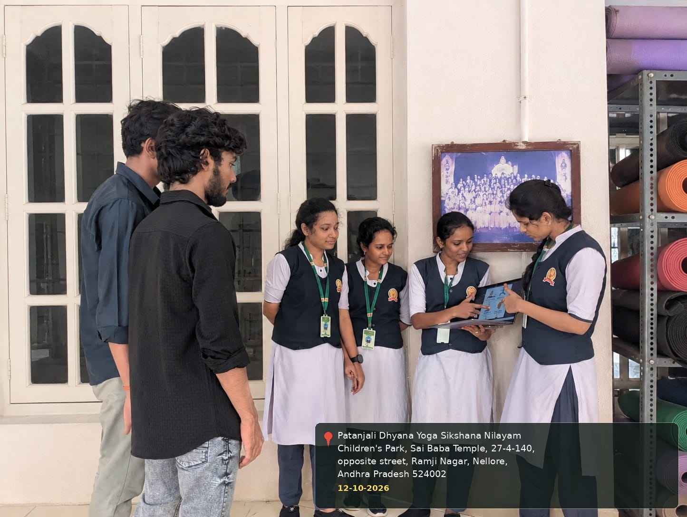
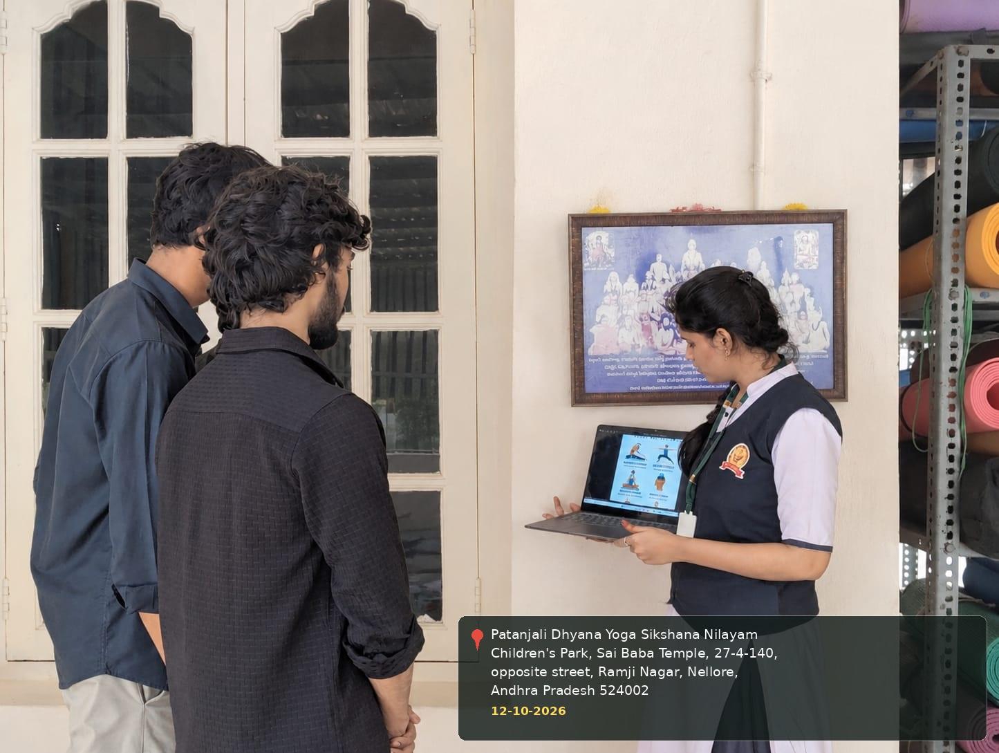

COMMUNITY SERVICE PROJECT
Week 2 Report
This week introduced the meaning, background, types, and everyday benefits of yoga for physical and mental well-being.
| DAY | ACTIVITY | OBSERVATIONS / NOTES |
|---|---|---|
| Day 1 | Meaning and Introduction to Yoga | Explained the meaning of yoga and its role in maintaining balance between body and mind. |
| Day 2 | History and Development of Yoga | Discussed the traditional roots of yoga and how yoga practices are followed today. |
| Day 3 | Types of Yoga | Introduced different forms of yoga, including Hatha Yoga, Raja Yoga, Bhakti Yoga, and Karma Yoga. |
| Day 4 | Physical and Mental Benefits | Discussed flexibility, strength, posture, relaxation, concentration, and stress management. |
| Day 5 | Yoga in Daily Life and Weekly Review | Discussed simple ways to include yoga in a daily routine and reviewed the week's learning. |


＋
Week 2 Activity Photo 2
Photo will be added here later.
← Back to all activities